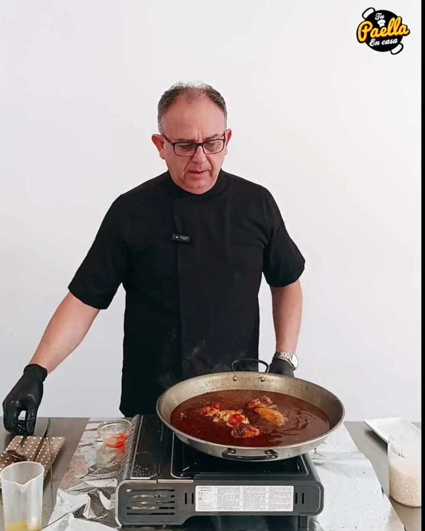
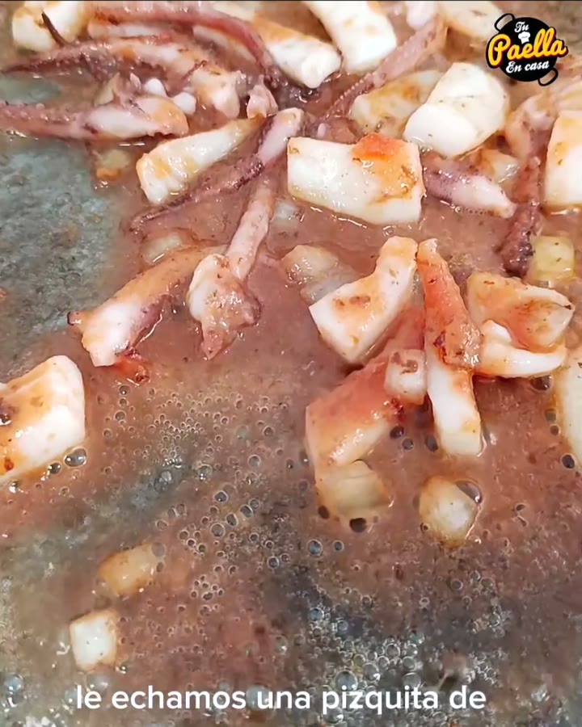
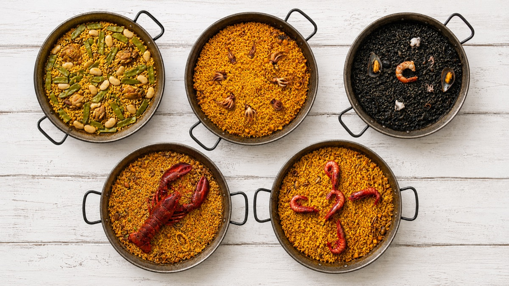
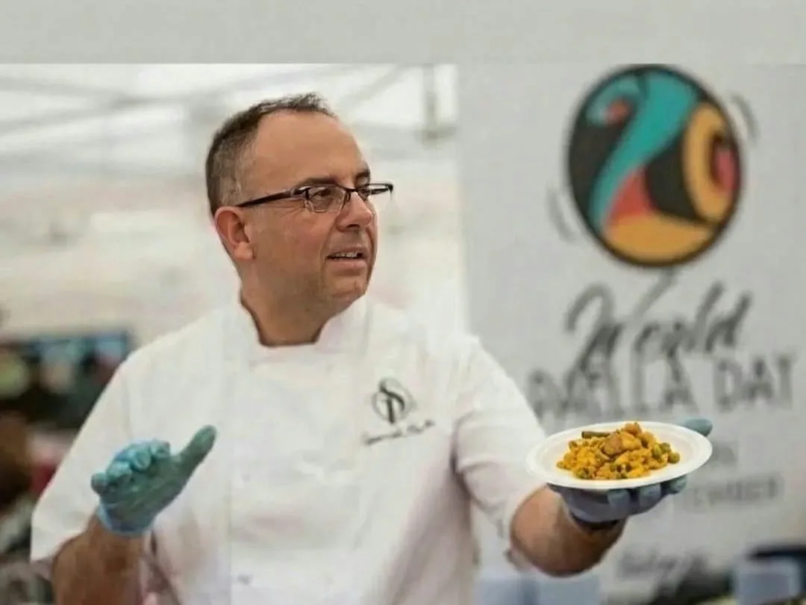

El arroz cambia según quién cocine
El sábado sale bien y el martes, con otro en el fuego, no. Y el cliente lo nota.
Vicente, chef arrocero valenciano, entra en tu cocina: recetas con ficha técnica, escandallos, carta de arroces y formación para tu equipo. Para bares, restaurantes, comida para llevar y caterings. La primera consulta es gratis.

El sábado sale bien y el martes, con otro en el fuego, no. Y el cliente lo nota.
El precio de la carta sale de mirar a la competencia, y el coste se calcula «a ojo».
Pero no sabes qué arroces, con qué proceso ni cómo aguantan el servicio o el delivery.
Varias paellas a la vez, tiempos ajustados, y no todas salen iguales.
Cada negocio tiene sus propias necesidades. Por eso adaptamos el trabajo a tus instalaciones, tu equipo, tu clientela y tus objetivos.
Formación profesional en arroces y paellas para tu equipo.
Creación y mejora de cartas gastronómicas.
Desarrollo de recetas y fichas técnicas.
Escandallos, costes y rentabilidad.
Implantación de arroces para llevar, delivery y catering.
Asesoramiento personalizado y seguimiento continuo.
30 minutos con Vicente, por videollamada o en tu local. Le cuentas qué arroces haces y qué te preocupa.
Fuegos, procesos, quién cocina y cuánto cuesta cada ración. [Formato a confirmar por Vicente.]
Qué haría, en cuánto tiempo y a qué precio. Si no tiene sentido para tu negocio, te lo dice.
Recetas, fichas, escandallos y tu equipo formado en tu propia cocina, con seguimiento después.
En la escuela de Vicente en Valencia, grupos de 6 alumnos como máximo, lunes y martes. Reserva tu plaza con 27 € por Bizum.

160 €
Para profesionales de la hostelería, restaurantes y caterings que buscan estandarizar procesos, optimizar costes y clavar el punto bajo la presión del servicio. De 5 a 6 horas.

370 € + IVA
Para quien produce para grandes eventos o va a montar su propio negocio de arroces: logística, recetario maestro y rentabilidad. 8 horas, 100 % práctico.

«Sabemos lo que funciona en la mesa y sabemos lo que funciona en el negocio.»
15 años dedicados a los arroces, emprendimientos en distintos sectores y la confianza de más de 2.000 clientes. Además de enseñar, cocina cada semana para familias, comuniones, bodas y empresas con Tu Paella en Casa.
Opiniones reales de clientes de Tu Paella en Casa, sobre todo de paellas para eventos.
«Espectacular y muy recomendable. Puntualidad excepcional, paella deliciosa… ¡Repitieron todos!»
Javier EstellésGoogle
«Pedimos tres paellas para una comunión de 40 personas. La experiencia fue excelente. Las tres estaban deliciosas: arroz al horno, paella de marisco y paella valenciana.»
RubénGoogle
«Arroz en su punto, suelto y la carne tierna, muy muy rica, calidad. Todos sus arroces tienen una pinta estupenda.»
Lola NavarroGoogle
[Aquí va el caso de un restaurante con el que haya trabajado Vicente: qué arroces hacía, qué cambió y qué dice el dueño. Con su permiso.]
PendienteCaso de hostelería
Así Vicente llega a la consulta sabiendo cómo es tu cocina.
Te escribimos por WhatsApp en un minuto
Déjanos tus datos y te proponemos día para la consulta gratis con Vicente. Contestamos de 8:00 a 21:30.
Listo. En la versión real, Amparo, del equipo de Vicente, te escribiría ahora por WhatsApp.
Maqueta: este formulario no envía nada ni guarda ningún dato.
Lo tuyo son los cursos de iniciación
Curso de Iniciación a Arroces y Paellas: 87 €, 5 horas, 100 % práctico y con 6 personas como máximo. Cocinas tú y luego coméis todos juntos. Lunes y martes, en Valencia.
Ver fechas y reservar (27 € por Bizum)¿No estás en Valencia? Tienes los 8 cursos de Vicente en vídeo, a 37 € cada uno.
Depende de lo que necesite tu cocina: no es lo mismo formar a un cocinero que montar la carta de arroces entera. Por eso la primera consulta es gratis, y después Vicente te da el precio por escrito. Si prefieres algo cerrado desde el principio, empieza por el curso Arrocero Pro HORECA (160 €).
Sí. Son 30 minutos con Vicente, sin compromiso. Si no ve que pueda ayudarte, te lo dice.
[A confirmar por Vicente: zona en la que se desplaza y si hace consultoría por videollamada.]
[A confirmar por Vicente: cómo organiza la formación con el servicio en marcha.]
Claro: el Curso de Iniciación (87 €, 5 horas) es para ti. Y si no estás en Valencia, tienes los cursos en vídeo con recetario en PDF.
El primer paso es una consulta gratis con Vicente.
Pedir mi consulta gratis